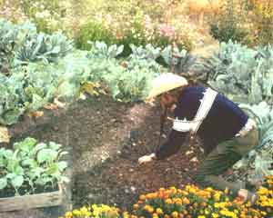
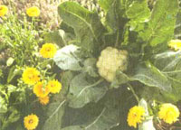
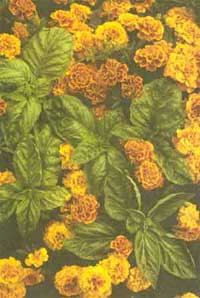
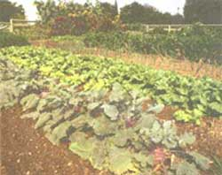
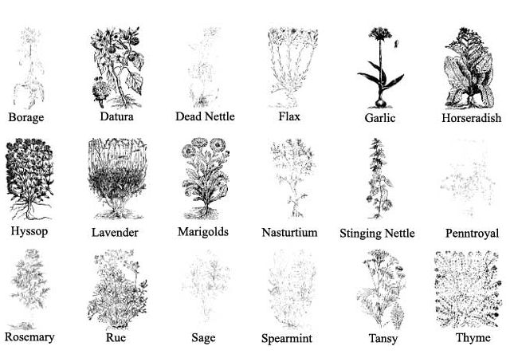

The A to Z Guide to Companion Planting for Healthier Plants and Bigger Harvests
THE MAGIC AND MYSTERY OF companion planting has intrigued and fascinated men for centuries, yet it is a part of the gardening world that has never been fully explored. Plants that assist each other in growing well, that repel insects, or that even repel other plants are all of great practical use, but we're just beginning to find out why. In the years to come I hope scientists, gardeners, and farmers everywhere will work together to make discoveries that will prove of great value in augmenting the world's food supply. Already, companion planting has produced insect- and disease-resistant fruits, grains, and vegetables, and experiments are being conducted on weed-resistant varieties.
A major enemy of the carrot is the carrot fly, whereas the leek suffers from the leek moth and the onion fly. Yet when they live in companionship, the strong and strangely different smell of the partner plant repels the insects so well that they do not even attempt to lay their eggs on the neighbor plant. This is why mixed plantings give better insect control than a monoculture where many plants of the same type are planted together in row after row.
It's the same with kohlrabi and radishes in their community life with lettuce. Both are often afflicted by earth flies, but when the flies get the odor of lettuce they take off. Even when plants are affected by diseases one can usually alleviate the situation with a mixed plant culture.
All through this article you will find "what to grow with" and "what not to grow with." Both are equally important to gardening success. The following suggestions for companion planting are only a beginning. Your own experiments will lead you toward many different pathways and discoveries.
Asparagus ( Asparagus officinalis ). Parsley planted alongside asparagus gives added vigor to both. Asparagus also goes well with basil, which itself is a good companion for tomatoes. Tomatoes will protect asparagus against asparagus beetles because they contain a substance called solanine. But if asparagus beetles are present in great numbers, they will attract and be controlled by their natural predators, making spraying unnecessary. A chemical derived from asparagus juice also has been found effective on tomato plants as a killer of nematodes, including the root-knot sting, stubby root, and meadow varieties.
In my garden, I grow asparagus in a long row at one side. After the spears are harvested in early spring, I plant tomatoes on either side, and I find that both plants prosper from the association. Cultivating the tomatoes also stems weed growth around the asparagus. The asparagus fronds should not be cut much, if at all, until very late in the fall, as the roots need this top growth to enable them to make spears the following spring.
Bean ( Phaselolus and Vicia ). Many different kinds of beans have been developed, each with its own life of "good" and "bad" companions. Generally speaking, however, all will thrive when interplanted with carrots and cauliflower; carrots especially help the beans to grow. Beans also grow well with beets as well as cucumbers and cabbages.
A moderate quantity of beans planted with leek and celeriac will help all, but planted too thickly they have an inhibiting effect-causing poor growth for all three. Marigolds in bean rows help repel the Mexican bean beetle.
Planting summer savory with green beans improves their growth and flavor as well as deterring bean beetles. (It is also good to cook with beans.)
Beans are inhibited by any member of the onion family-garlic, shallots, or chives-and they also dislike being planted near gladiolus.
Broad beans are excellent companions to corn, climbing diligently up the corn stalks to reach the light. They not only anchor the corn more firmly, acting as a protection against the wind, but a heavy vine growth may also act as a deterrent to raccoons. In addition, beans provide the soil with nitrogen, which enriches corn growth.
Bean and Potato . Bush beans planted with potatoes protect them against the Colorado potato beetle. In return, the potatoes protect the bush beans from the Mexican bean beetle. It is considered best to plant the beans and potatoes in alternate rows.
Bean, Bush ( Phaseolus vulgaris ). Included with bush beans are those known as butter, green, snap, string, or wax. All will do well if planted with a moderate amount of celery (about one celery plant to every six or seven of beans).
Bush beans and cucumbers are mutually beneficial. Bush beans planted with straw berries also help one another, both advancing more rapidly than if planted alone.
One gardener believes that celery is benefited if grown in a circle so that the lacy, loosely interwoven roots make a more desirable home for earth-worms and soil microbes.
Bush beans will aid corn if planted in alternate rows. They grow well with summer savory but should never be planted near fennel. They also dislike onions, as do all beans.
Bean, Lima ( Phaselous limensis ). Nearby locust trees have a good effect on the growth of lima beans. Other plants give them little or no assistance in repelling insects. Never cultivate lima beans when they are wet, because if anthracnose is present, this will cause it to spread. If the ground has sufficient lime and phosphorous there will probably be little trouble from anthracnose and mildew.
Bean, Pole . Like others of the family, pole beans do well with corn and summer savory but they also have some pronounced dislikes, such as kohlrabi and sunflower. Beets do not grow well with them, but radishes and pole beans seem to derive mutual benefit.
Bee Balm ( Monarda ). Improves both the growth and flavor of tomatoes.
Beet ( Beta vulgaris ). Beets grow well near bush beans, onions, or kohlrabi but are "turned off by pole beans. Field mustard and charlock also inhibit the growth of beets. Lettuce and most members of the cabbage family are "friendly" to them.
Broccoli ( Brassica oeraceae ). Like all members of the cabbage family, broccoli does well with such aromatic plants as dill, celery, chamomile. sage. peppermint, rosemary, and with other vegetables such as potatoes, beets, and onions. Do not plant it with tomatoes, pole beans, or strawberries. Use pyrethrum against aphids but only before the flower buds open.
Cabbage ( Brassicaceae ). The cabbage family includes not only cabbage but cauliflower, kale, kohlrabi, broccoli, collards, and Brussels sprouts-even rutabagas and turnips. While each plant of this group has been developed in a special way, they are all pretty much subject to the same likes and dislikes, insects and diseases. Hyssop, thyme, wormwood, and southernwood are helpful in repelling the white cabbage butterfly.
All members of this family are greatly helped by aromatic plants, or those which have many blossoms, such as celery, dill, chamomile, sage, peppermint, rosemary, onions, and potatoes.
If rabbits dig in your cabbage patch, plant any member of the onion family alongside them. Or you can dust with ashes. powdered aloes, or cayenne pepper. Rabbits also shun dried blood or blood meal.
Butterflies themselves aren't harmful and can help pollinate plants. It is their hatched eggs which as caterpillars do such damage to the orchard and field crops. The white cabbage butterfly is perhaps the most destructive. Herbs will repel them: hyssop, peppermint, rosemary, sage, thyme, and southernwood.
Cabbages dislike strawberries, tomatoes, and pole beans. All members of the family are heavy feeders and should have plenty of compost or well-decomposed cow manure worked into the ground previous to planting. Mulching will help if the soil has a tendency to dry out in hot weather, and water should be given if necessary.
Cabbage and cauliflower are subject to clubroot. and if this occurs try planting in new soil in a different pan of the garden. Rotate cabbage crops every two years.
If cabbage or broccoli plants do not head up well, it is a sign that lime, phosphorus, or potash is needed. Boron deficiency may cause the heart of the cabbage to die out.
Celery ( Apium graveolens ). Celery grows well with leeks, tomatoes, cauliflower, and cabbage, while bush beans and celery seem to provide mutual assistance. One gardener believes that celery is particularly benefited if grown in a circle so that the lacy, loosely interwoven roots may make a more desirable home for earthworms and soil microbes. Celery and leeks both grow well when trenched. Both celery and celeriac are reported to have a hormone which has an effect similar to insulin, making them an excellent seasoning for diabetics or for anyone on a salt-reduced diet.
Corn ( Zea mays ). Sweet corn does well with potatoes, peas, beans, cucumbers, pumpkin, and squash. Research has shown that removing corn suckers is a waste of time as well as being detrimental to the development of the ears. Peas and beans help corn by restoring to the soil the nitrogen used up by the corn. Is there anyone who hasn't heard the story of Indians putting a fish in every corn hill?
MeMelons, squash, pumpkins, and cucumbers like the shade provided by corn. In turn they benefit the corn, protecting it from the depredations of raccoons, which do not like to travel through the thick vines. Similarly, pole beans may be planted with corn to climb on the stalks. But don't plant tomatoes near corn, because the tomato worm and corn earworm are identical.
Also of note: An experiment with odorless marigold showed that when it was planted next to corn the Japanese beetle did not chew off the corn silks.
Cucumber ( Cucumis sativus ). Cucumbers apparently are offensive to raccoons, so it's beneficial to plant it alongside corn. And corn seemingly protects the cucumbers against the virus that causes wilt. Thin strips of cucumber will repel ants.
Cucumbers also like beans, peas, radishes, and sunflowers, and-preferring some shade-they will grow well in young orchards. Sow two or three radishes, but let them grow as long as they will, even blossoming and going to seed. Cucumber beetles also may be trapped by filling shallow containers about three-quarters full of water into which some cooking oil has been poured.
If cucumbers are attacked by nematodes, try a sugar spray. I boil half a cup of sugar in two cups of water, stirring until completely dissolved. Let cool and dilute with a gallon of water. Strange as it seems, sugar kills nematodes by drying them out. This will also attract honeybees-insuring pollination and resulting in a bumper crop of cucumbers-so the spray is worth trying even if you don't suspect the presence of nematodes.
Cucumbers dislike potatoes, while potatoes grown near cucumbers are more likely to be affected by phytophthora blight, so keep the two apart.
Beneficial fungi are another enemy of nematodes. If you suspect their presence, build up the humus content of your soil. A chive spray is helpful for downy mildew on cucumbers as is a spray made of horsetail.
Cucumbers dislike potatoes, while potatoes grown near cucumbers are more likely to be affected by phytophthora blight, so keep the two apart. Cucumbers also have a dislike for aromatic herbs.
Plant scientists William Duke, of Cornell, and Alan Putnam, of Michigan State University, have discovered that certain cucumber varieties fight weeds by releasing a toxic substance. This natural process-allelopathy-is believed to be an inherited trait. Thus, attempts are being made to incorporate weed resistance into commercial crops much in the same way as insect and disease resistance is bred into plants.
Eggplant ( Solanum melongena ). Redroot pigweed makes eggplant more resistant to insect attack. During dry weather, mulching and irrigation will help prevent wilt disease. Dry cayenne pepper sprinkled on plants while still wet with dew will repel caterpillars. Eggplant growing among green beans will be protected from the Colorado potato beetle. The beetles like eggplant even more than potatoes, but they find the beans repellent.
Garlic ( Allium sativum ). Eldon L. Reeves and S. V. Amonkar, of the University of California, discovered garlic to be a powerful destroyer of mosquitoes, achieving a 100% mortality of five species of California mosquito larvae by spraying breeding ponds with a garlic-based oil.
Researcher David Greenstock, of the Henry Doubleday Research Association in England, found that a garlic-oil emulsion, used as an insecticide, killed 89% of aphids and 95% of onion flies.
Here's a recipe for a good garlic spray: Take 3 to 4 ounces of chopped garlic bulbs and soak in 2 tablespoons of mineral oil for one day. Add a pint of water in which 1 teaspoon of fish emulsion has been dissolved. Stir well. Strain the liquid and store in a glass or china container, as it reacts with metals. Dilute this, starting with 1 part to 20 parts of water, and use as a spray against your worst insect pests. If sweet potatoes or other garden plants are attracting rabbits, try this spray. Rabbits dislike the smell of fish, too. Garlic sprays are useful in controlling late blight on tomatoes and potatoes.
Garlic grown in a circle around fruit trees is good against borers. It is beneficial to the growth of vetch, protects roses, and, when cloves are stored in grain, will repell grain weevils. All alliums , however, inhibit the growth of peas and beans. Plant garlic with tomatoes to protect against red spiders. I have done this for three successive years, with good results.
Kohlrabi ( Brassicaceae ). Kohlrabi grown with onion or beets, with aromatic plants, and, surprisingly, with cucumbers, are mutually beneficial in part because they occupy different soil strata. Kohlrabi dislikes strawberries, tomatoes, and pole beans but helps protect mustard family members.
Leek ( Allium porrum ). Leek is a heavy feeder and should be planted in soil well-fertilized with rotted manure. Leeks are usually sold in the grocery store (at least where I live) with the roots still attached. I once bought several bunches and planted them; they grew well and propagated, and I've had leeks ever since.
Leeks are good plants to grow with celery and onions, and also are benefited by carrots. Returning the favor, leeks repel carrot flies.
Lettuce: ( Lactuca saliva ) In spring I kep a supply of small lettuce plants growing in cold frames. When I pull every other green onion for table use I pop in lettuce plants. They will aid the onions, and the compost in the onion row will still be in good supply for the lettuce to feed on, while the onion will repel any rabbits.
Lettuce grows well with strawberries, cucumbers, and carrots, and it has long been considered good to team with radishes. Radishes grown with lettuce in summer are particularly succulent.
Okra ( Hibiscus esculentus ). This native of the Old-World tropics is grown for its immature pods, which are called okra or gumbo. It's a warm-weather plant which grows wherever melons or cucumbers thrive. I plant two rows, dig a trench between, and cover it with mulch. On the north side of my okra, I plant a row of sweet bell peppers and on the south side a row of eggplant. All are well mulched as the season advances. When the weather becomes dry in midsummer I lay the hose in the trench and flood it so that all three companions grow well.
Onion (Allium cepa). Onions and all members of the cabbage family get along well with each other. They also like beets, strawberries, tomatoes, lettuce, summer savory, and chamomile (sparsely), but do not like peas and beans.
Since onion maggots travel from plant to plant when set in a row, scatter your onion plants throughout the garden.
Toxic substances in the pigments of red and yellow onion skins appear to be associated with disease resistance. Russian biologist T. A. Tovstole found a water solution of onion skin-used as a spray three times daily at five-day intervals-gave an almost 100% mortality of hemitera, a parasite attacking more than 100 different species of plants.
Parsley ( Petroselinum hortense ). Parsley mixed with carrot seed helps to repel carrot flies by its masking aroma. It protects roses against rose beetles. Planted with tomatoes or asparagus, parsley will give added vigor to both.
Poultry are sometimes turned loose at intervals in parsley patches where there are many parsley worms, which are the larvae of the black swallowtail butterfly.
Parsnip ( Pastinuca sativa ) The parsnip is of ancient culture, but remains a vegetable for the discerning palate. The parsnips have few insect enemies and suffer from few diseases, but both the foliage and roots make a safe insect spray. They are not injured by freezing and are often left in the ground over winter. The seeds germinate slowly and unevenly and should not be used if over a year old.
Pea ( Pisum sativum ). For large crops, inoculate pea and bean seed with Nitragen (or similar compound), which is a natural bacterial agent. It coats the seed, aiding the sprouting seedling. This enables the plant to more readily form nodules on the roots which convert nitrogen from the air into a compound the plant can use.
Peas grow well with carrots, turnips, radishes, cucumbers, corn, beans, and potatoes, as well as many aromatic herbs. They do not grow well with onions, garlic, and gladiolus.
Pumpkin ( Cucurhita pepo ). Pumpkins grow well when jimson weed, sometimes called thorn apple, is in the vicinity. Pumpkins grow well with corn (a practice followed by Native Americans), yet pumpkins and potatoes have an inhibiting effect on each other.
Radish ( Rubus ). If you grow both red and black raspberries, put a considerable distance between the two types. The reason for this is that the reds sometimes carry a disease which does little or no harm to themselves but may prove near fatal to the blacks. Do not grow raspberries and blackberries near each other, either. Potatoes are more susceptible to blight if grown near raspberries, many gardeners believe.
Spinach ( Spinacia oleracea ). Because of its saponin content, spinach is a useful pre-crop and does well planted with strawberries.
Squash ( Curcubitaceae ). Two or three icicle radishes planted in each hill will help prevent insects on squash and on cucumbers. Let the radishes grow and go to seed. Nasturtiums will repel squash bugs and so will cigarette ash and other tobacco residue if placed with the seed when it is planted. Squash planted either earlier or later than usual often will escape insect damage. I find fall-planted squash almost entirely insect-free.
Early in the day before the sun is strong, squash stinkbugs are sluggish, and in the small garden may be picked off. There are also insect-resistant strains of squash available.
Sweet Potato ( Ipomea batalas ). Nemagold sweet potatoes developed by the Oklahoma Experiment Station have built-in resistance to nematodes. Sweet potatoes generally have high-energy value, with only peas and beans yielding more. They have a common enemy-the fungus disease or wilt called "stem rot"-which can be controlled with disease-free seed and by rotating the crop. White hellebore controls a number of leaf-eating insects.
If rabbits bother your sweet-potato patch, spray with a diluted fish emulsion. (Parks has one called Mer-Made Fish Emulsion.)
Tomato ( Lycopersicon esculentum ). Tomatoes will protect asparagus against the asparagus beetle. Since they are tender plants, put tomatoes in during late spring after the early crop of asparagus spears has been harvested. Tomatoes and all members of the Brassica family repel each other and should be kept apart. Tomatoes protect gooseberries against insects.
Tomatoes are compatible with chives, onion, parsley, marigold, nasturtium, and carrot, and for several years I have planted garlic bulbs between my tomato plants to protect them from red spider mites. Though not containing fungicidal elements, tomatoes will protect roses against black spot.
The active principle of tomato leaves is solanine, a volatile alkaloid that at one time was used as an agricultural insecticide. You can create your own insect-repellent spray for roses by making a solution of tomato leaves in your vegetable juicer-add 4 or 5 pints of water and 1 tablespoon of cornstarch. Strain and spray on roses where it is not convenient to plant tomatoes as companions. Keep any unused spray refrigerated.
Unlike most other vegetables, tomatoes prefer to grow in the same place year after year, and this is all right unless you have a disease problem, in which case plant your tomatoes in a new area. Stinging nettle growing nearby improves their keeping qualities, and redroot pigweed, in small quantities, is beneficial, too. Tomatoes are inhibited by the presence of kohlrabi and fennel.
Root excretions of tomatoes have an inhibiting effect on young apricot trees. Don't plant tomatoes near corn, since the tomato fruitworm is identical to the corn earworm. Don't plant near potatoes, either, since tomatoes render them more susceptible to potato blight.
If you smoke, be sure to wash your hands thoroughly before you work in your garden, for tomatoes are susceptible to diseases transmitted through tobacco.
Turnip/Rutabaga ( Brassica rapa and Brassica napobrassica ). An accident revealed that hairy vetch and turnips are excellent companions. Turnip seeds became mixed with the vetch a gardener planted, and they came up as volunteer plants. He found the turnip greens completely free of the aphids which usually infest them, apparently because the vetch provided shelter for ladybugs, which feast on aphids. Elsewhere it has been found that wood ashes around the base of turnip plants will control scab.
I find peas planted near turnips are mutually benefited. Turnip and radish seed mixed with clover will bolster the nitrogen content of the soil. In your crop rotation it is good to follow the heavy feeders with light feeders such as turnips and rutabagas.
Turnips dislike hedge mustard and knotweed, and should not be rotated with other members of the cabbage family such as broccoli or kohlrabi. When synthesized, a naturally occuring chemical compound in turnips when synthesized is deadly to aphids, spider mites, houseflies, German cockroaches, and bean beetles.
Rutabagas take much the same culture as turnips but require a longer growing season.
Legumes planted in a rotation will protect grain crops and grasses from white grubs and corn rootworm. Chinch bugs on corn and flea beetles are controlled by growing soybeans to shade bases of the plants. Goats with worms may be relieved by feeding them carrots; in horses by feeding them mulberry leaves.
The following herbs may be planted as specific control:
BASIL: Against flies and mosquitoes.
BORAGE: Against tomato worm.
CASTOR BEAN: Against moles and plant lice.
CATNIP: Against flea beetles.
DATURA: Against Japanese beetles.
DEAD NETTLE: Against potato bugs.
FLAX: Against potato bugs.
GARLIC: Against Japanese beetle, aphis, weevils, fruit tree borers, spider mites.
HENBIT: General insect repellent.
HORSERADISH: Against potato bugs (plant at comers of plot).
HYSSOP: Against cabbage moth.
LAVENDER: Against clothes moths (dry and place in garments).
MARIGOLDS: Against Mexican bean beetles, nematodes and many other insects.
MINT: Against white cabbage moths, dried against clothes moths.
MOLE PLANT: Against moles and mice (Mole plant is a species of Euphorbia).
NASTURTIUM: Against aphids, squash bugs striped pumkin beetles, woolly aphids.
PENNYROYAL: Against ants an plant lice.
PEPPERMINT: Against white cabbage butterflies, ants.
PETUNIA: Against beetles.
POT MARIGOLD: Against pickle-worms, aphids, leafhoppers, spider mites, harlequin bugs, imported cabbage worms and many other insects.
PYRETHURM: Against pickleworms, aphids, leafhoppers, spider mites, harlequin bugs, imported cabbage worms and ticks.
ROSE GERANIUM: Oil or crushed leaves as insect repellants.
ROSEMARY: Against cabbage moths, bean beetles, carrot flies, malaria mosquitoes.
RUE: Against Japanese beetles.
SAGE: Against cabbage moths, carrot flies, ticks.
SANTOLINA: Against moths.
SASSAFRAS: Against plant lice.
SOUTHERNWOOD: Against cabbage moths, malaria mosquitoes.
SPEARMINT: Against ants, aphids
STINGING NETTLE: Against aphids, black flies.
SUMMER SAVORY: Against bean beetles.
TANSY: Against flying insects, Japanese beetles, striped cucumber beetles, squash bugs, and ants.
THYME: Against cabbage worms.
WHITE GERANIUM: Against Japanese beetles.
WORMWOOD: Against animal intruders, cabbage worm butterflies, black flea beetles, and even malaria mosquitoes.
|
 Cabbage is helped by aromatic plants such as celery, onion, sage, or?as pictured here? marigolds. |
 THE WHITE CABBAGE BUTTERFLY IS REPELLED IF CELERY PLANTS ARE GROWN NEAR THE CAULIFLOWER. HERE, CAULIFLOWER IS PLANTED WITH MARIGOLDS. |
 BASIL AND MARIGOLDS HELP TOMATOES GROW BETTER AND PRODUCE MORE. |
|
 Rows of conr, kohlrabi, onion, and lettuce in the garden. |
 |
|